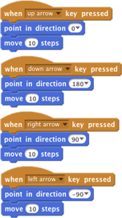
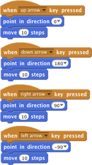
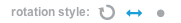
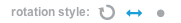
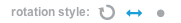

Movimente seu ator com as teclas de seta
Experimente este código:

Pressione as teclas de seta
 para acionar.
para acionar.

Pressione as teclas de seta
Para copiar uma pilha de blocos, clique no topo com a ferramenta de duplicação: 
Se o ator ficar de ponta-cabeça, clique em  e defina o estilo de rotação para esquerda-direita: 
e defina o estilo de rotação para esquerda-direita: 
e defina o estilo de rotação para esquerda-direita: 